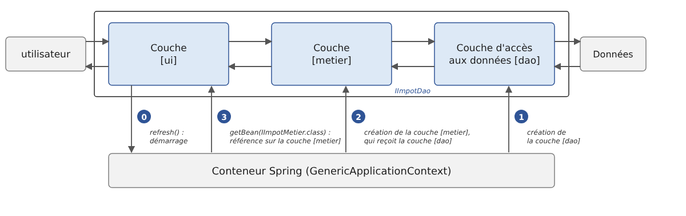

6. Architectures en couches
6.1. Introduction
Revenons sur la dernière version de l'application de calcul de l'impôt (version 3, chapitre 5). Réduit à l'essentiel, son programme principal avait la structure suivante (schéma simplifié) :
Ce programme mêle trois traitements que l'on retrouve dans la plupart des applications :
- la récupération de données mémorisées dans des fichiers, des bases de données, etc. : lignes 1-8 ;
- le dialogue avec l'utilisateur : lignes 11-12 (saisies) et 14 (affichages) ;
- l'utilisation d'un algorithme métier, le calcul de l'impôt : ligne 14. Ce calcul était fait par la classe abstraite [AbstractImpot], mère de [FileImpot] et de [JsonImpot] : dans la version 3, la lecture des données et le calcul sont encore réunis dans un même objet.
La pratique a montré qu'isoler ces différents traitements dans des classes séparées améliore la maintenabilité des applications. L'architecture d'une application ainsi structurée est la suivante :

On appelle cette architecture « architecture trois tiers », traduction de l'anglais « three-tier architecture ». Le terme « tiers » désigne normalement une partie de l'application qui s'exécute sur une machine différente. Lorsque les parties sont sur une même machine, on parle plutôt d'architecture en couches (« layered architecture ») :
- la couche [metier] contient les règles métier de l'application. Pour notre application, ce sont les règles qui permettent de calculer l'impôt d'un contribuable. Cette couche a besoin de données pour travailler :
- les tranches d'impôt, des données qui changent chaque année ;
- le nombre d'enfants, le statut marital et le salaire annuel du contribuable ;
- la couche d'accès aux données ou [dao] (DAO = Data Access Object) fournit les données déjà enregistrées dans des fichiers ou des bases de données. C'est le cas ici des tranches d'impôt, comme dans la version 3 de l'application ;
- la couche d'interface avec l'utilisateur ou [ui] (UI = User Interface) fournit les données saisies par l'utilisateur et lui affiche les résultats. C'est le cas ici du nombre d'enfants, du statut marital et du salaire annuel du contribuable.
De façon générale :
- la couche [dao] s'occupe de l'accès aux données persistantes (fichiers, bases de données) ou non persistantes (réseau, capteurs, etc.) ;
- la couche [ui] s'occupe des interactions avec l'utilisateur, s'il y en a un ;
- les trois couches sont rendues indépendantes les unes des autres grâce à l'utilisation d'interfaces.
Nous allons reprendre l'application [Impots] déjà étudiée à plusieurs reprises pour lui donner une architecture en couches. Auparavant, il nous faut définir les interfaces des différentes couches de l'application.
6.2. Les interfaces de l'application [Impots]
Rappelons qu'une interface définit un ensemble de signatures de méthodes. Les classes qui implémentent l'interface donnent un contenu à ces méthodes.
Revenons à l'architecture en couches de notre application :
Dans ce type d'architecture, c'est souvent l'utilisateur qui prend les initiatives. Il fait une demande en [1] et reçoit une réponse en [8]. On appelle cela le cycle demande-réponse. Prenons l'exemple du calcul de l'impôt d'un contribuable. Celui-ci va nécessiter plusieurs étapes :
- la couche [ui] demande à l'utilisateur son statut marital, son nombre d'enfants et son salaire annuel. C'est l'opération [1] ci-dessus ;
- ceci fait, la couche [ui] demande à la couche [metier] de calculer l'impôt. Pour cela, elle lui transmet les données qu'elle a reçues de l'utilisateur. C'est l'opération [2] ;
- la couche [metier] a besoin de certaines informations pour mener à bien son travail : les tranches d'impôt. Elle les demande à la couche [dao] par le chemin [3, 4, 5, 6] : [3] est la demande initiale et [6] la réponse à cette demande ;
- ayant toutes les données dont elle avait besoin, la couche [metier] calcule l'impôt ;
- la couche [metier] peut maintenant répondre à la demande faite par la couche [ui] en [2]. C'est le chemin [7] ;
- la couche [ui] met en forme ce résultat puis le présente à l'utilisateur. C'est le chemin [8] ;
- on pourrait imaginer que l'utilisateur fasse des simulations d'impôt et qu'il veuille les mémoriser. Il utiliserait le même chemin [1-8] pour le faire.
On voit dans cette description qu'une couche utilise les ressources de la couche qui est à sa droite, jamais celles de la couche qui est à sa gauche. Considérons deux couches contiguës :

La couche [A] fait des demandes à la couche [B]. Dans les cas les plus simples, une couche est implémentée par une unique classe. Mais une application évolue au cours du temps, et la couche [B] peut avoir successivement des classes d'implémentation différentes [B1], [B2], etc. Si la couche [B] est la couche [dao], elle peut avoir une première implémentation [B1] qui va chercher les données dans un fichier. Quelques années plus tard, on peut vouloir mettre ces données dans une base de données : on construit alors une seconde classe d'implémentation [B2]. Si, dans l'application initiale, la couche [A] travaillait directement avec la classe [B1], on est obligé de réécrire en partie le code de la couche [A]. Supposons par exemple qu'on ait écrit dans la couche [A] quelque chose comme :
- ligne 1 : une instance de la classe [B1] est créée ;
- ligne 3 : des données sont demandées à cette instance.
Si la nouvelle classe d'implémentation [B2] a des méthodes de même signature que la classe [B1], il faudra changer tous les [B1] en [B2]. C'est le cas le plus favorable, et il est assez improbable si on n'a pas prêté attention à ces signatures. Dans la pratique, il est fréquent que les classes [B1] et [B2] n'aient pas les mêmes signatures de méthodes, et donc qu'une bonne partie de la couche [A] doive être réécrite.
On améliore les choses en plaçant une interface entre les couches [A] et [B]. On fige ainsi dans une interface les signatures des méthodes que la couche [B] présente à la couche [A]. Le schéma précédent devient le suivant :

La couche [A] ne s'adresse plus directement à la couche [B] mais à son interface [IB]. Dans le code de la couche [A], la classe d'implémentation [Bi] de la couche [B] n'apparaît plus qu'une fois, au moment de la création de l'objet qui implémente l'interface [IB]. Ensuite, c'est l'interface [IB] et non sa classe d'implémentation qui est utilisée. Le code précédent devient :
- ligne 1 : une instance [ib] implémentant l'interface [IB] est créée par instanciation de la classe [B1] ;
- ligne 3 : des données sont demandées à l'instance [ib].
Désormais, si on remplace l'implémentation [B1] de la couche [B] par une implémentation [B2] et que ces deux implémentations respectent la même interface [IB], seule la ligne 1 de la couche [A] doit être modifiée. C'est un grand avantage qui, à lui seul, justifie l'usage systématique d'interfaces entre deux couches.
On peut aller encore plus loin et rendre la couche [A] totalement indépendante de la couche [B]. Dans le code ci-dessus, la ligne 1 pose problème parce qu'elle nomme en dur la classe [B1]. L'idéal serait que la couche [A] reçoive une implémentation de l'interface [IB] sans avoir à nommer de classe. Ce serait cohérent avec le schéma ci-dessus : la couche [A] s'adresse à l'interface [IB], et on ne voit pas pourquoi elle aurait besoin de connaître le nom de la classe qui implémente cette interface.
C'est ce que permet l'injection de dépendances (« Dependency Injection », DI). L'architecture précédente évolue de la façon suivante :

Un composant transversal, le conteneur d'injection de dépendances, crée les objets qui implémentent les couches et les relie entre eux : il passe à la couche [A] une référence sur l'objet qui implémente la couche [B]. Le code de la couche [A] prend alors la forme suivante :
- lignes 5-7 : la couche [A] reçoit par son constructeur une instance [ib] qui implémente l'interface [IB]. Ce n'est pas la couche [A] qui la crée mais le conteneur ;
- ligne 11 : des données sont demandées à l'instance [ib].
La classe d'implémentation [B1] n'apparaît plus nulle part dans le code de la couche [A]. Lorsque l'implémentation [B1] sera remplacée par une nouvelle implémentation [B2], rien ne changera dans le code de la couche [A] : seul changera l'endroit, unique dans l'application, où l'on indique au conteneur quelle classe implémente [IB]. Cet endroit peut même lire le nom de l'implémentation à utiliser dans un fichier de configuration.
Dans le monde Java, l'injection de dépendances a été popularisée au début des années 2000 par le framework Spring, dont la configuration s'écrivait alors dans des fichiers XML. Spring Framework, aujourd'hui dans sa version 7, reste la référence ; il est à la base de Spring Boot, que nous utiliserons au chapitre 13 « Services web ». C'est son conteneur que nous utiliserons dans la version 5 de l'application (il en existe d'autres, comme CDI, la norme de Jakarta EE, ou Google Guice). Le couple « interfaces Java + injection de dépendances » apporte une amélioration décisive à la maintenance des applications en rendant leurs couches étanches entre elles.
Revenons à l'architecture en couches de notre application. Dans les cas simples, on peut partir de la couche [metier] pour découvrir les interfaces de l'application. Pour travailler, elle a besoin de données :
- déjà disponibles dans des fichiers, des bases de données ou via le réseau. Elles sont fournies par la couche [dao] ;
- pas encore disponibles. Elles sont alors fournies par la couche [ui], qui les obtient auprès de l'utilisateur.
Quelle interface la couche [dao] doit-elle offrir à la couche [metier] ? La couche [dao] doit fournir à la couche [metier] les tranches d'impôt. Dans notre application, la couche [dao] exploite des données existantes mais n'en crée pas de nouvelles. Son interface peut être la suivante :
- ligne 1 : l'interface est placée dans le paquetage [dao]. Le fichier [IImpotDao.java] doit alors se trouver dans un dossier [dao], comme nous le verrons ;
- ligne 10 : l'interface [IImpotDao] définit la méthode [getTranchesImpot], qui fournit les tranches d'impôt à la couche [metier]. Java n'a pas de propriétés : une donnée en lecture seule est exposée par une méthode [getXxx], selon la convention des JavaBeans. Les tranches sont rendues sous la forme d'une liste [List<TrancheImpot>] plutôt que d'un tableau : nous verrons que les implémentations rendent une liste non modifiable, alors que les éléments d'un tableau peuvent toujours être modifiés par celui qui le reçoit ;
- ligne 3 : importe le type [TrancheImpot], défini dans le paquetage [entites] :
Une tranche d'impôt est représentée par un record (Java 16) : une classe non modifiable dont le compilateur génère le constructeur (à partir des composants déclarés entre parenthèses après le nom du type), les champs [private final], les accesseurs [limite()], [coeffR()] et [coeffN()], ainsi que les méthodes [equals], [hashCode] et [toString]. On écrit [new TrancheImpot(limite, coeffR, coeffN)] pour créer une tranche. Les trois composants sont de type [BigDecimal], la classe Java des nombres décimaux exacts : un [double] ne sait pas représenter exactement 0,068 ou 291,09. Comme un [BigDecimal] est lui-même non modifiable, une tranche ne peut plus changer une fois créée. Une classe JavaBean classique, avec des méthodes [setXxx], l'aurait permis ; nous verrons que cette impossibilité supprime un effet de bord d'une ancienne façon d'écrire la couche [metier].
Quelle interface la couche [metier] doit-elle présenter à la couche [ui] ? Rappelons les interactions entre ces deux couches :
- la couche [ui] demande à l'utilisateur son statut marital, son nombre d'enfants et son salaire annuel. C'est l'opération [1] du schéma ;
- ceci fait, la couche [ui] demande à la couche [metier] de calculer l'impôt. Pour cela, elle lui transmet les données qu'elle a reçues de l'utilisateur. C'est l'opération [2].
L'interface de la couche [metier] peut être la suivante :
- ligne 1 : tout ce qui concerne la couche [metier] est placé dans le paquetage [metier] ;
- ligne 6 : l'interface [IImpotMetier] ne définit qu'une méthode, celle qui calcule l'impôt d'un contribuable à partir de son statut marital, de son nombre d'enfants et de son salaire annuel. Les méthodes d'une interface sont implicitement publiques et abstraites : il est inutile d'écrire [public abstract].
Nous étudions maintenant une première implémentation de cette architecture en couches.
6.3. Application exemple - version 4
6.3.1. Le projet
La version 4 est un programme formé de plusieurs fichiers sources, qui n'utilise aucune bibliothèque externe. Nous l'exécuterons avec le lanceur de code source de Java, sans créer de projet Maven. Chaque couche y occupe un dossier :
- le dossier [entites] contient les types transversaux aux couches [ui], [metier] et [dao] : le record [TrancheImpot], l'exception [ImpotException] et l'énumération [CodeErreur] de ses codes d'erreur ;
- le dossier [dao] contient l'interface et les classes de la couche [dao]. Nous utiliserons deux implémentations de l'interface [IImpotDao] : la classe [HardwiredImpot], dont les données sont écrites dans le code (version 2), et la classe [FileImpot], qui lit les données dans un fichier texte (version 3). La lecture d'un fichier JSON, l'autre possibilité de la version 3, sera reprise dans la version 5 ;
- le dossier [metier] contient l'interface et la classe de la couche [metier] ;
- le dossier [ui] contient la classe de la couche [ui] ;
- le fichier [Main.java] crée les couches et les relie entre elles ;
- le fichier [DataImpot.txt] contient les tranches d'impôt lues par l'implémentation [FileImpot] de la couche [dao].
Contrairement à d'autres langages, le nom des dossiers a ici de l'importance : en Java, une classe du paquetage [dao] se trouve dans un dossier [dao], une classe du paquetage [impots.dao] dans un dossier [impots/dao], et ces dossiers sont relatifs à la racine des sources. C'est ainsi que le compilateur et la machine virtuelle retrouvent les classes à partir de leur nom complet.
Le fichier [Main.java] est un fichier source compact : il n'a pas de déclaration de paquetage et appartient donc au paquetage sans nom, à la racine des sources. Depuis Java 22 (lanceur de programmes multi-fichiers, JEP 458), la commande [java Main.java], tapée dans le dossier [ImpotsV4], suffit à exécuter le programme : le lanceur de code source compile [Main.java] en mémoire et, chaque fois qu'il y rencontre une classe d'un autre fichier, par exemple [dao.FileImpot], il cherche le fichier [dao/FileImpot.java] à partir du dossier de [Main.java] et le compile à son tour. Aucun fichier [.class] n'est écrit sur le disque. Une classe du paquetage sans nom peut utiliser les classes des autres paquetages, mais l'inverse est impossible : aucune classe ne peut importer [Main]. C'est pourquoi seul le programme principal y est placé.
Un IDE ouvre ce dossier tel quel et exécute [Main.java] sans configuration particulière. Lorsque le programme aura besoin de bibliothèques externes (Jackson, Spring), dans la version 5, nous passerons à un projet Maven.
6.3.2. Les entités de l'application

Nous appelons entités les types transversaux aux couches. Ce sont en général les classes qui encapsulent les données de la couche [dao]. Ces entités remontent en général jusqu'à la couche [ui]. Les entités de l'application sont le record [TrancheImpot], déjà présenté, et l'exception [ImpotException], accompagnée de l'énumération de ses codes d'erreur :
- ligne 6 : une énumération ([enum]). En Java, les valeurs d'une énumération sont des objets, instances uniques de la classe [CodeErreur], et une énumération peut avoir des méthodes ;
- ligne 7 : les cinq codes d'erreur. La méthode [ordinal()], héritée de la classe [Enum], rend la position de la valeur dans la liste : 0 pour [ACCES], 4 pour [CHAMP3] ;
- lignes 10-12 : à chaque code est associé un bit, obtenu par un décalage à gauche : [1 << ordinal()] vaut 1, 2, 4, 8 et 16. Ces puissances de 2 peuvent se combiner avec l'opérateur [|] : le code [CHAMP2.bit() | CHAMP3.bit()] (8 + 16 = 24) signifie que les champs 2 et 3 d'une ligne sont incorrects. La version 3 donnait explicitement sa valeur à chaque code ([ACCES(1)], [LIGNE(2)]…) et décodait une combinaison en un ensemble [EnumSet] ; le calcul du bit à partir de la position dispense ici de ces valeurs. Le code d'erreur de l'exception reste un simple entier, que toutes les implémentations de la couche [dao] pourront utiliser ;
-
lignes 15-23 : la méthode statique [noms] rend les noms des codes présents dans une combinaison de bits : « CHAMP2, CHAMP3 » pour 24. La méthode [values()], générée par le compilateur, rend le tableau des valeurs de l'énumération ; [code & c.bit()] n'est pas nul si le bit du code [c] est présent dans [code] ; [name()] rend le nom de la valeur. Un [StringJoiner] (Java 8) assemble des chaînes en les séparant par le séparateur donné à son constructeur.
-
ligne 7 : une exception propre à l'application dérive de la classe [RuntimeException] : c'est une exception non contrôlée (« unchecked »). Les méthodes qui la lancent n'ont pas à la déclarer dans une clause [throws], et leurs appelants ne sont pas obligés de l'intercepter. C'est le choix habituel pour les erreurs qu'une couche signale à une autre couche ;
- lignes 10-11 : une exception est sérialisable (la classe [Throwable] implémente l'interface [Serializable]). Le champ [serialVersionUID] donne la version de la classe pour la sérialisation ; sans lui, le compilateur, avec l'option [-Xlint:all], émet un avertissement. L'annotation [@Serial] (Java 14) permet au compilateur de vérifier la déclaration de ce champ ;
- ligne 14 : le code d'erreur, un entier qui combine des bits [CodeErreur]. Le champ est [final] : il reçoit sa valeur dans le constructeur et ne peut plus changer ;
- lignes 17-24 : deux constructeurs, l'un avec un message et un code, l'autre avec en plus l'exception d'origine, la cause, qui sera accessible par la méthode [getCause()]. Le premier appelle le second ([this(...)]), qui appelle le constructeur de la classe parent [RuntimeException] ([super(...)]) ;
- lignes 27-29 : l'accesseur du code d'erreur.
Dans cette version, seule la classe [FileImpot] de la couche [dao] lance des [ImpotException].
6.3.3. La couche [dao]
Rappelons l'interface de la couche [dao] :
Nous implémentons cette interface de deux façons différentes. Tout d'abord avec la classe [HardwiredImpot] :
- ligne 8 : la classe [HardwiredImpot] implémente ([implements]) l'interface [IImpotDao] ;
- lignes 11-18 : les tranches d'impôt. [List.of] (Java 9) crée une liste non modifiable : ses méthodes [add], [set] ou [remove] lancent une [UnsupportedOperationException]. Le champ est initialisé dans sa déclaration ;
- lignes 20-23 : l'implémentation de la méthode de l'interface. L'annotation [@Override] demande au compilateur de vérifier que la méthode implémente bien une méthode de l'interface : une faute de frappe dans son nom provoquerait une erreur de compilation ;
- lignes 26-28 : une méthode privée qui crée une tranche à partir de trois chaînes. Un [BigDecimal] construit à partir d'une chaîne est exact : [new BigDecimal("0.068")] vaut exactement 0,068, alors que [new BigDecimal(0.068)] vaudrait 0,0680000000000000049…, le [double] le plus proche de 0,068.
L'interface [IImpotDao] est également implémentée par la classe [FileImpot], qui lit les tranches d'impôt dans un fichier texte. Le fichier [DataImpot.txt] est le suivant :
Chaque ligne décrit une tranche sous la forme [limite:coeffR:coeffN]. Les nombres sont écrits avec un point décimal, quelle que soit la langue du système : le fichier est ainsi lisible sur toutes les machines. Les valeurs sont celles du barème 2004 sur les revenus 2003, conservées telles quelles : il s'agit d'un exercice. La classe [FileImpot] est la suivante :
- lignes 3-7 : l'importation statique ([import static], Java 5) permet d'utiliser les membres statiques d'une classe sans les préfixer du nom de la classe. Les valeurs d'une énumération sont des membres statiques : on écrit [CHAMP1] au lieu de [CodeErreur.CHAMP1] ;
- ligne 21 : la classe [FileImpot] implémente l'interface [IImpotDao] ;
- lignes 24, 27 : le nom du fichier et les tranches lues. Ces champs [final] reçoivent leur valeur une seule fois, dans le constructeur (lignes 32 et 76). Ils sont rendus par les méthodes des lignes 79-86 ; [getTranchesImpot] est la méthode de l'interface ;
- ligne 30 : le constructeur reçoit le nom du fichier des tranches d'impôt ;
- ligne 34 : les tranches lues sont accumulées dans une liste [ArrayList] ;
- ligne 38 : [Path.of] (Java 11) crée le chemin du fichier. Un chemin relatif l'est au dossier courant, celui dans lequel a été tapée la commande [java] ;
- lignes 39-41 : si le fichier n'existe pas, on lance une [NoSuchFileException] (paquetage [java.nio.file]) avec un message en français. Son constructeur à trois paramètres reçoit le nom du fichier, celui d'un éventuel second fichier (ici [null]) et la raison de l'erreur. Les messages des exceptions du JDK sont en anglais : sans ce test, [Files.readAllLines] lancerait elle-même une [NoSuchFileException] dont le message serait le seul nom du fichier ;
- ligne 42 : [Files.readAllLines] lit le fichier en entier, en UTF-8, et rend la liste de ses lignes. La méthode ouvre et ferme elle-même le fichier. Pour un gros fichier, on préférerait une lecture au fil de l'eau avec [Files.lines] ou un [BufferedReader] ;
- ligne 45 : [strip()] (Java 11) supprime les espaces en début et en fin de ligne ;
- ligne 50 : la ligne est découpée par [split], dont le paramètre est une expression régulière : le séparateur est un caractère deux-points, éventuellement entouré d'espaces ([\s*] désigne zéro ou plusieurs espaces). Dans une chaîne Java, la barre oblique inverse est doublée ;
- lignes 53-54 : une ligne qui n'a pas trois champs est incorrecte ;
- lignes 57-62 : conversion des trois champs. Chaque champ incorrect ajoute son bit au code d'erreur avec l'opérateur [|=] ;
- lignes 65-67 : une ligne incorrecte provoque une [ImpotException] dont le message donne le numéro et le contenu de la ligne. Cette exception n'est pas une [IOException] : elle n'est pas interceptée ligne 71 et remonte telle quelle à l'appelant ;
- ligne 69 : la tranche lue est ajoutée à la liste ;
- lignes 71-74 : toutes les erreurs d'entrée-sortie dérivent de [IOException] : fichier absent ([NoSuchFileException]), droits insuffisants ([AccessDeniedException]), fichier qui n'est pas en UTF-8 ([MalformedInputException]), etc. L'erreur est encapsulée dans une [ImpotException] de code [ACCES] ; l'exception d'origine est conservée comme cause ;
- ligne 76 : [List.copyOf] (Java 10) rend une copie non modifiable de la liste ;
- lignes 89-91 : la conversion d'un champ en [BigDecimal]. La méthode [matches] vérifie que la chaîne entière respecte l'expression régulière [\d+(\.\d+)?] : un ou plusieurs chiffres, éventuellement suivis d'un point et d'autres chiffres. Ainsi « 0,191 » est refusé, de même qu'un nombre négatif. Le constructeur [BigDecimal(String)] ne dépend pas de la langue de l'utilisateur : il attend toujours un point décimal. En cas d'erreur, la méthode rend [null].
6.3.4. La couche [metier]
Rappelons l'interface de cette couche :
Son implémentation [ImpotMetier] est la suivante :
- ligne 10 : la classe [ImpotMetier] implémente l'interface [IImpotMetier]. La couche [metier] doit collaborer avec la couche [dao] : elle reçoit donc, par son constructeur (ligne 16), une référence sur l'objet qui implémente l'interface [IImpotDao] ;
- lignes 13, 16-18 : à la construction de l'objet, la couche [metier] demande une fois pour toutes les tranches d'impôt à la couche [dao] et les mémorise dans un champ [final]. On remarquera que la couche [metier] ne connaît la couche [dao] que par son interface [IImpotDao] : elle ignore si les tranches viennent du code, d'un fichier ou, plus tard, d'une base de données ;
- lignes 24-29 : la couche [metier] ne fait pas confiance à ses appelants. Un paramètre incorrect provoque une [IllegalArgumentException], l'exception non contrôlée que Java prévoit pour ce cas, avec un message qui nomme le paramètre ;
- lignes 31-35 : le nombre de parts. Un [BigDecimal] n'a pas d'opérateurs arithmétiques : on utilise ses méthodes [add], [subtract], [multiply] et [divide]. Comme il est non modifiable, chaque opération rend un nouvel objet, d'où l'écriture [nbParts = nbParts.add(...)]. La division par [BigDecimal.TWO] (constante ajoutée en Java 19) est exacte : 3 enfants donnent 1,5 part ;
- lignes 37-38 : le revenu imposable et le quotient familial. La division par le nombre de parts peut avoir un nombre infini de décimales (une division par 3, par exemple) : sans précision indiquée, [divide] lancerait alors une [ArithmeticException]. [MathContext.DECIMAL128] limite le résultat à 34 chiffres significatifs ;
- lignes 41-47 : on cherche la première tranche dont la limite est supérieure ou égale au quotient familial. Les [BigDecimal] se comparent avec [compareTo], qui rend un nombre négatif, nul ou positif : [qf.compareTo(limite) <= 0] signifie [qf <= limite]. La dernière tranche, [tranches.getLast()] (Java 21), sert si aucune autre ne convient : sa limite (0) n'est pas utilisée ;
- ligne 49 : l'impôt. [intValue()] rend la partie entière du résultat.
Une façon de faire autrefois courante consistait à modifier, avant la recherche, la limite de la dernière tranche (quelque chose comme [tranches[tranches.length - 1].setLimite(qf + 1)]) pour que la boucle de recherche s'arrête toujours. Cette instruction modifiait le tableau fourni par la couche [dao] : un effet de bord sur une donnée partagée par toutes les couches. On ne pourrait plus l'écrire ici, puisqu'une [TrancheImpot] est non modifiable, de même que la liste qui les contient. Le code moderne prend simplement la dernière tranche quand aucune limite ne convient, sans modifier les données qu'il reçoit.
6.3.5. La couche [ui]
Dans les versions 2 et 3, le dialogue avec l'utilisateur était écrit dans le programme principal, à la suite de la création de l'objet de calcul. Seule différait la façon de créer cet objet. Nous isolons maintenant ce dialogue dans une classe de la couche [ui], qui ne connaît la couche [metier] que par son interface :
- ligne 6 : la classe [Dialogue] n'a pas d'état propre et ne contient que des membres statiques. Java n'a pas de classes statiques de premier niveau : on déclare la classe [final] (on ne peut pas en dériver) et on lui donne un constructeur privé (lignes 16-17), ce qui interdit d'en créer des instances ;
- lignes 9-13 : le message d'aide est un bloc de texte (« text block », Java 15), délimité par trois guillemets. Il peut s'étendre sur plusieurs lignes ; l'indentation commune des lignes est retirée. Les guillemets fermants étant placés au bout de la dernière ligne, le texte ne se termine pas par un passage à la ligne ;
- ligne 20 : la méthode [run] reçoit la couche [metier] sous la forme de son interface [IImpotMetier]. Elle ignore tout de la classe qui l'implémente et de la couche [dao] ;
- lignes 23-25 : [IO.readln] (Java 25) affiche son paramètre puis lit une ligne au clavier. Elle rend [null] à la fin du flux d'entrée ; la ligne 25 remplace alors [null] par la chaîne vide : une fin de flux arrête le dialogue comme une ligne vide ;
- ligne 31 : la ligne saisie est découpée sur les espaces ; l'expression régulière [\s+] (un ou plusieurs espaces) ignore les espaces multiples ;
- lignes 37-38 : les chaînes se comparent avec [equals], jamais avec [==], qui compare des références ;
- lignes 43-53 : le nombre d'enfants et le salaire doivent être des entiers positifs ou nuls. La méthode [entier] (lignes 60-66) rend -1 si le champ n'est pas un entier : [Integer.parseInt] lance alors une [NumberFormatException], qui est interceptée. Un nombre négatif et une saisie incorrecte sont ainsi refusés par le même test ;
- ligne 55 : les paramètres sont corrects : le calcul est demandé à la couche [metier].
6.3.6. L'intégration des couches
Il reste à créer les couches et à les relier entre elles. C'est le rôle du programme principal [Main.java] :
- lignes 1-8 : un fichier source compact (Java 25) n'a pas de déclaration de classe, mais il peut avoir des importations. Le compilateur place son contenu dans une classe implicite ;
- ligne 13 : la méthode [main] reçoit les arguments de la ligne de commande dans le tableau [args]. L'argument choisit l'implémentation de la couche [dao] : [hardwired] pour la classe [HardwiredImpot], sinon le nom du fichier lu par la classe [FileImpot], [DataImpot.txt] par défaut ;
- ligne 18 : création de la couche [dao]. C'est le seul endroit du programme où les classes [HardwiredImpot] et [FileImpot] sont nommées ;
- ligne 20 : création de la couche [metier], qui reçoit la couche [dao] ;
- lignes 21-28 : la création de la couche [dao] peut lancer une [ImpotException]. On affiche alors l'erreur, avec le message de l'exception d'origine s'il y en a une, et le programme s'arrête avec le code de sortie 1 ([System.exit(1)]). Le code d'erreur est affiché en clair grâce à la méthode [CodeErreur.noms]. L'instruction [return] de la ligne 27 n'est jamais exécutée, mais le compilateur ignore que [System.exit] ne rend pas la main : sans elle, il signalerait que la variable [metier] peut ne pas être initialisée ligne 31 ;
- ligne 31 : les couches sont prêtes : la couche [ui] dialogue avec l'utilisateur.
6.3.7. Exécutions
Dans le dossier [ImpotsV4], avec le fichier [DataImpot.txt] (implémentation [FileImpot]), et en testant la validation des saisies :
Avec l'implémentation [HardwiredImpot] :
Avec un fichier qui n'existe pas :
Le code d'erreur est [ACCES], et le message de l'exception d'origine, la [NoSuchFileException], est affiché : il est formé du nom du fichier, suivi de la raison donnée à son constructeur.
Avec le fichier [DataImpotInvalide.txt] suivant, dont la ligne 3 est écrite avec des virgules décimales :
on obtient :
Les champs 2 et 3 de la ligne 3 sont incorrects : le code d'erreur combine les bits [CHAMP2] et [CHAMP3], et la méthode [CodeErreur.noms] l'affiche sous la forme « CHAMP2, CHAMP3 ».
6.3.8. Conclusion
L'architecture en couches et l'utilisation d'interfaces ont apporté une certaine souplesse à notre application. Elle apparaît dans la façon dont le programme principal crée les couches [dao] et [metier] :
Changer l'implémentation de la couche [dao] ne change que la ligne 2. Une fois les couches créées, le code de la couche [ui] est le même dans les deux cas : la couche [metier] y est manipulée au travers de son interface [IImpotMetier], et non au travers de sa classe d'implémentation.
La même souplesse apparaît dans la couche [metier] : elle est construite à partir d'une référence sur l'interface de la couche [dao]. Changer l'implémentation de cette dernière n'a donc aucun impact sur la couche [metier]. C'est pourquoi notre unique classe [ImpotMetier] a pu travailler sans modification avec deux implémentations différentes de la couche [dao].
6.4. Application exemple - version 5

Cette nouvelle version reprend la précédente en y apportant les modifications suivantes :
- les couches [dao] et [metier] sont chacune placées dans un module Maven qui produit une bibliothèque (un fichier jar), et testées avec le framework de tests unitaires JUnit ;
- la couche [dao] reçoit une troisième implémentation, [JsonImpot], qui lit les tranches d'impôt dans un fichier JSON avec la bibliothèque Jackson ;
- l'intégration des couches est assurée par le conteneur d'injection de dépendances de Spring, et l'implémentation de la couche [dao] est choisie dans un fichier de configuration.
Dans les grands projets, plusieurs développeurs travaillent sur la même application. Les architectures en couches facilitent ce mode de travail : parce que les couches communiquent entre elles au travers d'interfaces bien définies, un développeur qui travaille sur une couche n'a pas à se préoccuper du travail des autres développeurs sur les autres couches. Il suffit que tout le monde respecte les interfaces.
Ainsi, le développeur de la couche [metier] a besoin, pour tester sa couche, d'une implémentation de la couche [dao]. Tant que celle-ci n'est pas terminée, il peut utiliser une implémentation factice de la couche [dao], pourvu qu'elle respecte l'interface [IImpotDao]. C'est là un autre avantage de l'architecture en couches : un retard dans la couche [dao] n'empêche pas de tester la couche [metier]. L'implémentation factice a aussi l'avantage d'être bien plus simple à mettre en œuvre que la véritable couche [dao], qui peut nécessiter un SGBD, des connexions réseau, etc.
Lorsque la couche [dao] est terminée et testée, elle est fournie aux développeurs de la couche [metier] sous la forme d'une bibliothèque (un fichier jar publié dans un dépôt Maven) plutôt que de code source à recopier. Au final, l'application est livrée sous la forme d'un programme principal (celui de la couche [ui]) et de bibliothèques de classes (les autres couches).
6.4.1. Le projet Maven ImpotsV5
La version 5 est un projet Maven multi-modules : un projet parent, qui ne produit rien lui-même, regroupe trois modules, un par couche. Les tests ne forment pas un projet séparé : la convention de Maven place les tests d'un module dans son dossier [src/test/java]. Ils sont compilés et exécutés par Maven, mais ne font pas partie du fichier jar du module. On obtient l'arborescence suivante :
Les paquetages sont désormais préfixés par [impots] : [impots.entites], [impots.dao], [impots.metier], [impots.ui]. Les modules [impots-dao] et [impots-metier] seront en effet réutilisés par d'autres projets (chapitres 10 à 13), et deux bibliothèques utilisées par un même programme ne doivent pas définir deux classes de même nom complet. Dans les projets professionnels, on préfixe les paquetages par le nom de domaine inversé de l'organisation ([org.springframework], [tools.jackson]…), ce qui garantit des noms uniques.
Le fichier [pom.xml] du projet parent est le suivant :
- lignes 8-11 : les coordonnées du projet parent : groupe [exemples.impots], nom [impots-v5], version [5.0]. Le type d'empaquetage [pom] indique que le projet ne produit pas de fichier jar : il ne fait que regrouper des modules et leur transmettre une configuration commune ;
- lignes 14-18 : les modules, c'est-à-dire les sous-dossiers qui contiennent chacun un projet Maven. Une commande Maven tapée dans le dossier [ImpotsV5] s'applique à tous les modules, dans l'ordre imposé par leurs dépendances : [impots-dao], puis [impots-metier], puis [impots-ui] ;
- lignes 20-23 : les propriétés, héritées par les modules : Java 25 et des fichiers sources en UTF-8 ;
- lignes 26-54 : la section [dependencyManagement] fixe la version des dépendances sans les ajouter aux modules. Un module qui en a besoin la déclare sans version : toutes les versions sont ainsi réunies en un seul endroit. On y trouve les modules de l'application eux-mêmes (lignes 28-37), Jackson 3 (lignes 38-42), le conteneur de Spring (lignes 43-47) et JUnit (lignes 48-52) ;
- lignes 57-63 : la section [dependencies] du parent, elle, ajoute ses dépendances à tous les modules : ici JUnit, avec la portée [test]. Une dépendance de portée [test] n'est utilisée que pour compiler et exécuter les tests : elle ne fait pas partie des dépendances de la bibliothèque produite ;
- lignes 66-91 : la section [pluginManagement] fixe de même la version et la configuration des plugins de Maven pour tous les modules : le compilateur (avec l'option [-Xlint:all], lignes 75-77), Surefire, qui exécute les tests ([mvn test]), et exec, qui exécute un programme ([mvn exec:java]). La ligne 74 demande au compilateur de conserver le nom des paramètres des méthodes dans le code compilé : JUnit s'en sert pour afficher les tests paramétrés, comme nous le verrons.
L'application se construit par la commande suivante, tapée dans le dossier [ImpotsV5] :
Maven exécute pour chaque module, dans l'ordre, les phases de son cycle de vie : compilation ([compile]), compilation et exécution des tests ([test]), création du fichier jar dans le dossier [target] du module ([package]), et enfin installation ([install]). Si un test échoue, la construction s'arrête. La phase [install] recopie le fichier jar et le [pom.xml] de chaque module dans le dépôt Maven local de l'utilisateur, le dossier [~/.m2/repository] : on y trouve par exemple le fichier [exemples/impots/impots-dao/5.0/impots-dao-5.0.jar]. C'est dans ce dépôt local que Maven cherche les dépendances avant d'aller les télécharger sur Maven Central. Ce dépôt local a deux usages :
- une commande Maven tapée dans le dossier d'un module, par exemple [mvn exec:java] dans le dossier [impots-ui], trouve dans le dépôt local les modules dont ce module dépend ;
- les applications des chapitres 10 à 13 déclarent dans leurs fichiers [pom.xml] des dépendances vers [exemples.impots:impots-dao:5.0], [exemples.impots:impots-metier:5.0] et, pour la classe [Dialogue], [exemples.impots:impots-ui:5.0] : elles réutilisent ainsi les couches de la version 5, sans en recopier le code source, comme elles utiliseraient Jackson ou Spring.
Après toute modification d'un module, il faut donc relancer [mvn install] pour que les autres projets en voient la nouvelle version. L'option [-DskipTests] permet de sauter l'exécution des tests, et l'option [-q] (« quiet ») limite l'affichage de Maven aux erreurs.
6.4.2. La couche [dao]
Le module [impots-dao] contient la couche [dao] et les entités de l'application. Son fichier [pom.xml] est le suivant :
- lignes 8-12 : le projet parent. Le module en hérite le groupe et la version : seul son nom est indiqué (ligne 14). Ses coordonnées sont donc [exemples.impots:impots-dao:5.0] ;
- lignes 18-21 : la dépendance vers Jackson, sans version : celle-ci est fixée par le projet parent. JUnit est hérité du parent.
Les entités
Le record [TrancheImpot] est celui de la version 4 (paquetage [impots.entites]). L'énumération [CodeErreur] disparaît : [ImpotException] devient ainsi commune à toutes les implémentations de la couche [dao], sans être liée aux codes de l'une d'elles :
- ligne 14 : le code d'erreur reste un simple entier : chaque implémentation de la couche [dao] définit ses propres codes ;
- lignes 17-32 : quatre constructeurs, avec ou sans cause, avec ou sans code. Ils appellent tous le dernier. Sans code, celui-ci vaut 0.
L'implémentation [FileImpot]
L'interface [IImpotDao] et la classe [HardwiredImpot] sont celles de la version 4. La classe [FileImpot] ne change que par la façon d'écrire ses codes d'erreur :
- ligne 6 : les codes d'erreur, auparavant dans l'énumération [CodeErreur] du paquetage des entités, sont devenus des constantes de la classe [FileImpot] : ce sont en effet des codes propres à cette implémentation de l'interface [IImpotDao] ([JsonImpot] a les siens). En Java, une constante est un champ [static final], dont le nom s'écrit par convention en majuscules. Plusieurs champs du même type peuvent être déclarés dans la même instruction. Les constantes s'écrivent [CHAMP1] dans la classe et [FileImpot.CHAMP1] à l'extérieur. Les importations statiques de la version 4 deviennent inutiles.
Plus loin dans le constructeur :
- lignes 4-14 : les codes sont des entiers que l'on combine directement avec l'opérateur [|=] ;
- lignes 17, 24 : les erreurs sont encapsulées dans une [ImpotException], avec leur code.
L'implémentation [JsonImpot]
Comme la version 3 du chapitre 5, la troisième implémentation de la couche [dao] lit les tranches d'impôt dans un fichier JSON avec la bibliothèque Jackson. Le fichier [DataImpot.json] est le suivant :
La classe [JsonImpot] est la suivante :
- ligne 17 : les codes d'erreur de cette implémentation : erreur d'accès au fichier ou contenu incorrect ;
- lignes 29-37 : le fichier est lu en entier dans une chaîne par [Files.readString] (Java 11), avec la même gestion des erreurs d'entrée-sortie que dans [FileImpot] ;
- ligne 40 : la chaîne JSON est transformée en tableau [TrancheImpot[]]. Dans Jackson 3, dont les paquetages commencent par [tools.jackson], l'objet [JsonMapper] qui fait la conversion est non modifiable : on le construit avec un objet intermédiaire, le « builder » ([JsonMapper.builder()...build()]). Sa méthode [readValue] reçoit le texte JSON et la classe de l'objet à créer, ici [TrancheImpot[].class]. Jackson sait construire un record : il fait correspondre les noms JSON ([limite], [coeffR], [coeffN]) aux composants du record et appelle son constructeur. Les nombres sont lus directement en [BigDecimal], le type des composants, sans passer par un [double] : ils sont donc exacts ;
- lignes 41-43 : [readValue] rend [null] si le fichier contient le littéral JSON [null] : on lance alors une exception ;
- ligne 44 : le tableau devient une liste non modifiable ;
- lignes 45-48 : un fichier qui n'est pas un tableau JSON de tranches provoque une [JacksonException]. Dans Jackson 3, cette exception dérive de [RuntimeException] : c'est une exception non contrôlée. Le bloc [catch] intercepte deux types d'exceptions (« multi-catch », Java 7) et les encapsule dans une [ImpotException] de code [FORMAT].
Un programme d'essai
Avant d'écrire des tests automatisés, faisons un premier essai visuel de la couche [dao]. Le programme [EssaiDao] affiche les tranches fournies par les trois implémentations. Nous l'avons placé dans les sources de test du module ([src/test/java]) : il ne fera pas partie du fichier jar de la couche [dao] :
- ligne 10 : la méthode [main]. Depuis Java 25, elle n'aurait plus besoin d'être publique ni de recevoir les arguments du programme ; dans les projets Maven, nous gardons sa forme classique [public static void main(String[] args)], que reconnaissent tous les outils (greffon [exec-maven-plugin], IDE) ;
- lignes 12-13 : une liste des trois implémentations de l'interface [IImpotDao] ;
- ligne 15 : [getClass()] rend la classe réelle de l'objet, dont [getSimpleName()] est le nom sans le paquetage ;
- ligne 17 : [IO.println] affiche la tranche au moyen de sa méthode [toString], générée par le compilateur pour un record ;
- lignes 20-26 : gestion d'une éventuelle [ImpotException].
Le programme s'exécute dans le dossier [impots-dao]. La phase [test-compile] compile les sources principales et les sources de test ; le paramètre [exec.mainClass] désigne la classe à exécuter, et [exec.classpathScope=test] demande au plugin exec d'utiliser les classes de test et les dépendances de portée [test] :
Les trois implémentations fournissent les mêmes tranches. La méthode [toString] d'un [BigDecimal] écrit toujours un point décimal, quelle que soit la langue de l'utilisateur.
6.4.3. La couche [metier]
Le fichier [pom.xml] du module [impots-metier] est le suivant :
- lignes 18-21 : la couche [metier] utilise la couche [dao]. Dans le dossier [ImpotsV5], Maven construit [impots-dao] avant [impots-metier] ; dans le dossier [impots-metier], il trouve [impots-dao] dans le dépôt local, où l'a placé [mvn install]. Les dépendances sont transitives : le module reçoit aussi Jackson, dont dépend [impots-dao].
L'interface [IImpotMetier] et la classe [ImpotMetier] sont celles de la version 4 (paquetage [impots.metier]). Le programme d'essai [EssaiMetier], placé dans les sources de test du module, fait quelques calculs d'impôt :
- ligne 12 : création des couches [dao] et [metier]. La couche [dao] est implémentée par la classe [FileImpot]. Le programme s'exécutant dans le dossier [impots-metier], le chemin relatif [../impots-dao/DataImpot.txt] désigne le fichier de données du module [impots-dao] ;
- lignes 13-16 : appels répétés de l'unique méthode de l'interface [IImpotMetier].
Résultats, dans le dossier [impots-metier] :
Un couple marié avec 2 enfants et une personne seule avec 3 enfants ont le même nombre de parts (3) : leurs impôts sont égaux.
6.4.4. Les tests unitaires avec JUnit
6.4.4.1. Le principe
Les tests faits jusqu'à présent reposaient sur une vérification visuelle : on vérifiait qu'on obtenait à l'écran ce qui était attendu. Cette méthode est inutilisable lorsqu'il y a de nombreux tests à faire : l'être humain est sujet à la fatigue, et sa capacité à vérifier des résultats s'émousse au fil de la journée. Les tests doivent alors être automatisés et ne nécessiter aucune intervention humaine.
Une application évolue au fil du temps. À chaque évolution, on doit vérifier qu'elle ne « régresse » pas, c'est-à-dire qu'elle continue à passer les tests de bon fonctionnement faits lors de son écriture initiale. On appelle ces tests des tests de non-régression. Une application un peu importante peut nécessiter des centaines de tests : on teste en effet chaque méthode de chaque classe de l'application. On appelle cela des tests unitaires.
Des frameworks ont été développés pour automatiser ces tests. En Java, le framework de référence est JUnit, créé à la fin des années 1990 par Kent Beck et Erich Gamma. Nous utilisons sa version 6, parue fin 2025 (ici en version 6.0.3) ; son API, celle du paquetage [org.junit.jupiter.api], est celle de JUnit 5, qu'on appelle aussi JUnit Jupiter (TestNG est un autre framework, de principe identique). Les tests sont exécutés par la commande [mvn test], en ligne de commande : c'est ce qui permet de les lancer automatiquement, par exemple à chaque modification du code déposée sur un serveur d'intégration continue. Les IDE (IntelliJ IDEA, VS Code avec l'Extension Pack for Java) les exécutent aussi et présentent leurs résultats sous forme d'arbre.
6.4.4.2. Un premier exemple
Examinons sur un exemple le principe des tests JUnit. Le projet Maven [TestsDemo] ne contient que des tests, dans le dossier [src/test/java/testsdemo]. Son fichier [pom.xml] est le suivant :
- lignes 18-23 : le projet utilise l'artefact [junit-jupiter], qui regroupe l'API des tests (les annotations et la classe [Assertions]), le support des tests paramétrés et le moteur qui découvre et exécute les tests. Sa portée est [test] ;
- ligne 33 : le compilateur conserve le nom des paramètres des méthodes, que JUnit affiche pour les tests paramétrés ;
- lignes 40-44 : le plugin Surefire, qui exécute les tests lors de la phase [test] de Maven.
La classe de tests [Tests1] est la suivante :
- ligne 3 : les méthodes de vérification, les assertions, sont des méthodes statiques de la classe [Assertions]. On les importe par une importation statique pour écrire [assertEquals(...)] plutôt que [Assertions.assertEquals(...)] ;
- ligne 10 : une classe de tests est une classe ordinaire, sans annotation. Elle n'a pas besoin d'être publique, ni ses méthodes : la visibilité paquetage suffit ;
- lignes 13-15 : la méthode testée. Dans un vrai projet, elle serait dans les sources principales du projet ([src/main/java]) ;
- lignes 18-20 : le constructeur. Il n'est utilisé que pour écrire un message à l'écran : on veut voir quand il est exécuté ;
- ligne 23 : l'annotation [@BeforeEach] désigne une méthode exécutée avant chaque test ;
- ligne 29 : l'annotation [@AfterEach] désigne une méthode exécutée après chaque test ;
- ligne 35 : l'annotation [@Test] désigne une méthode de test. Une méthode de test ne rend rien, n'est pas privée et, sauf exception que nous verrons, n'a pas de paramètres ;
- ligne 38 : la méthode [assertEquals(attendu, obtenu)] vérifie que la valeur obtenue est égale à la valeur attendue. Si ce n'est pas le cas, elle lance une exception [AssertionFailedError] et le test échoue. Ici, l'assertion doit réussir ;
- ligne 45 : cette assertion doit échouer. Le troisième paramètre est le message affiché en cas d'échec : dans JUnit, le message est toujours le dernier paramètre des assertions.
On exécute les tests par la commande [mvn test], dans le dossier du projet. Nous reproduisons ci-dessous l'affichage du lanceur console de JUnit, qui présente les tests sous forme d'arbre ; [mvn test] exécute les mêmes tests et l'IDE affiche le même arbre. Nous avons abrégé la pile des appels (lignes [...]) :
- lignes 2-5 : les affichages du test [t1] : le constructeur a été exécuté, puis la méthode [avant], le test, et enfin la méthode [apres]. Le lanceur console affiche les sorties des tests au fur et à mesure, avant l'arbre récapitulatif ;
- lignes 6-9 : les affichages du test [t2]. On remarquera que le constructeur a de nouveau été exécuté : JUnit crée une nouvelle instance de la classe de tests pour chaque test. Les tests sont ainsi indépendants les uns des autres : un test ne peut pas être perturbé par l'état laissé par un autre test (l'annotation [@TestInstance(Lifecycle.PER_CLASS)] demande au contraire une instance unique pour tous les tests de la classe) ;
- lignes 11-27 : l'arbre des tests : le moteur JUnit Jupiter, les classes de tests, puis leurs tests. Le symbole ✔ signale un succès, le symbole ✘ un échec. Les tests de la classe [Tests2], présentée ci-dessous, ont tous réussi ; JUnit les a exécutés avant ceux de [Tests1]. L'ordre d'exécution des classes et des méthodes est stable, mais volontairement non évident : les tests ne doivent pas dépendre de leur ordre d'exécution ;
- ligne 27 : le test [t2] a échoué. Le message d'erreur contient le message passé à [assertEquals], la valeur attendue et la valeur obtenue. Les messages de JUnit sont en anglais ;
- lignes 29-34 : le détail de l'échec : l'exception [AssertionFailedError] lancée par l'assertion, et la pile des appels au moment de l'échec, qui mène à la ligne fautive, la ligne 45 du fichier [Tests1.java] ;
- lignes 38-43 : le bilan : 12 tests, dont 11 réussis et 1 échec. La commande [mvn test] se termine alors par un échec de la construction (« BUILD FAILURE ») et un code de sortie non nul, ce qui permet à un script de détecter l'échec.
Pour n'exécuter qu'une partie des tests, on utilise le paramètre [test] du plugin Surefire : [mvn test -Dtest=Tests2] n'exécute que les tests de la classe [Tests2], [mvn test -Dtest=Tests1#t1] que le test [t1]. Signalons enfin les annotations [@BeforeAll] et [@AfterAll], qui désignent des méthodes statiques exécutées une seule fois, avant le premier test et après le dernier test de la classe, et l'annotation [@DisplayName], qui donne à un test un nom plus parlant que celui de sa méthode. Par défaut, JUnit exécute les tests les uns après les autres ; une exécution en parallèle peut être demandée dans un fichier de configuration [junit-platform.properties].
6.4.4.3. D'autres assertions
La classe [Assertions] a de nombreuses méthodes. La classe [Tests2] en présente quelques-unes :
- lignes 29-30 : vérifient qu'une expression booléenne est vraie ou fausse ;
- lignes 32-33 : vérifient qu'une référence est non nulle ou nulle ;
- lignes 34-35 : vérifient que deux références désignent ou non le même objet ;
- lignes 41-43 : les calculs sur les réels [double] sont approchés : [0.1 + 0.2] n'est pas exactement égal à [0.3]. On compare donc deux réels à un écart près, ici un millionième ;
- lignes 51-56 : JUnit n'a pas d'assertions propres aux chaînes : on vérifie avec [assertTrue] le résultat des méthodes [startsWith] ou [contains]. [assertIterableEquals] vérifie que deux collections ont les mêmes éléments, dans le même ordre. Ces assertions sont regroupées par [assertAll], qui reçoit des expressions lambda [() -> ...] (chapitre 7) : toutes les assertions sont exécutées, même si l'une d'elles échoue, et les échecs sont signalés ensemble. Sans [assertAll], le premier échec arrête le test. La bibliothèque AssertJ, souvent utilisée avec JUnit, propose des assertions plus riches, écrites sous la forme [assertThat(message).startsWith("Ligne")] ;
- lignes 63-65 : [assertThrows(Type.class, action)] exécute l'action, une expression lambda, et vérifie qu'elle lance une exception de type [Type] ou d'un type dérivé. Ici, la méthode [get] de la liste créée par [List.of] lance une [ArrayIndexOutOfBoundsException], classe dérivée de [IndexOutOfBoundsException] : l'assertion réussit. [assertThrowsExactly] exige au contraire une exception de type exactement [Type]. Les deux méthodes rendent l'exception lancée, ce qui permet de vérifier ensuite ses propriétés (ligne 66) ;
- lignes 70-74 : un test paramétré. L'annotation [@ParameterizedTest] remplace [@Test] ; la méthode a des paramètres, et l'annotation [@CsvSource] fournit des jeux de valeurs, une chaîne par jeu, les valeurs étant séparées par des virgules. JUnit les convertit dans le type des paramètres. Le test est exécuté une fois par jeu de valeurs : c'est ce qu'ont montré les lignes 18-20 des résultats précédents ;
- lignes 77-81 : pour un test à un seul paramètre, l'annotation [@ValueSource] fournit directement la liste des valeurs ([ints], [strings], [doubles]…).
Résumons les principales méthodes de la classe [Assertions] :
Méthode | Vérifie que |
[assertEquals(attendu, obtenu)] | les deux valeurs sont égales (méthode [equals]) |
[assertEquals(réel1, réel2, delta)] | les deux réels sont égaux à delta près |
[assertNotEquals(v1, v2)] | les deux valeurs sont différentes |
[assertSame(o1, o2)], [assertNotSame(o1, o2)] | les deux références désignent (ou non) le même objet |
[assertNull(o)], [assertNotNull(o)] | la référence est nulle (ou non) |
[assertTrue(b)], [assertFalse(b)] | l'expression booléenne est vraie (ou fausse) |
[assertInstanceOf(Type.class, o)] | l'objet est de type [Type] ou d'un type dérivé |
[assertArrayEquals(t1, t2)] | les deux tableaux ont les mêmes éléments, dans le même ordre |
[assertIterableEquals(c1, c2)] | les deux collections ont les mêmes éléments, dans le même ordre |
[assertAll(action1, action2, ...)] | toutes les assertions des actions réussissent (échecs signalés ensemble) |
[assertThrows(Type.class, action)] | l'action lance une exception de type [Type] ou d'un type dérivé |
[assertThrowsExactly(Type.class, action)] | l'action lance une exception de type [Type] exactement |
[fail(message)] | (échoue toujours) |
Toutes ces méthodes acceptent un dernier paramètre facultatif : le message affiché en cas d'échec.
6.4.4.4. Les tests de la couche [dao]
Revenons à l'application [Impots]. La classe [DaoTests], qui teste la couche [dao], est dans le dossier [src/test/java/impots/dao] du module [impots-dao]. Elle appartient au même paquetage que les classes testées, ce qui lui donne accès à leurs membres de visibilité paquetage. Le [pom.xml] du module n'a pas à être modifié : JUnit est hérité du projet parent. Le fichier de données incorrect [DataImpotInvalide.txt] est placé dans le dossier du module : c'est le dossier courant pendant l'exécution des tests.
- lignes 21-28 : une méthode qui crée une couche [dao] à partir du nom de sa classe, avec une expression [switch] (Java 14) : chaque [case] donne, après la flèche [->], la valeur de l'expression ;
- lignes 31-40 : le même test est exécuté pour les trois implémentations, grâce à l'annotation [@ValueSource]. Il vérifie qu'il y a 7 tranches et la valeur de la tranche n° 2 (la troisième). Les [BigDecimal] sont comparés avec [compareTo] plutôt qu'avec [equals] : la méthode [equals] d'un [BigDecimal] tient compte du nombre de décimales écrites (son échelle, « scale ») et considère 0.191 et 0.1910 comme différents, alors que [compareTo] compare les seules valeurs ;
- lignes 44-48 : les trois implémentations donnent exactement les mêmes tranches. [assertEquals] compare les listes avec leur méthode [equals], qui compare les éléments un à un ; la méthode [equals] d'un record, générée par le compilateur, compare ses composants. La comparaison réussit parce que les trois sources écrivent les nombres de la même façon ;
- lignes 52-57 : un fichier absent provoque une [ImpotException] de code [ACCES], qui encapsule une [NoSuchFileException]. [assertInstanceOf] vérifie le type de la cause ;
- lignes 61-66 : le fichier [DataImpotInvalide.txt] provoque une [ImpotException] dont le code combine les bits [CHAMP2] et [CHAMP3], et dont le message commence par « Ligne n° 3 » ;
- lignes 70-74 : la même vérification pour l'implémentation [JsonImpot].
6.4.4.5. Les tests de la couche [metier]
La classe [MetierTests] du module [impots-metier] teste la couche [metier] :
- lignes 19-20 : la couche [metier] testée, construite sur la couche [dao] [HardwiredImpot], qui ne dépend d'aucun fichier. Les champs sont initialisés à la création de l'objet ; comme JUnit crée une instance de la classe par test, chaque test dispose de couches neuves ;
- lignes 23-34 : des calculs dont on connaît le résultat, fournis par [@CsvSource]. Ce sont les valeurs de contrôle de l'application, déjà obtenues par les versions précédentes : elles doivent rester exactes dans toutes les versions à venir. Les chaînes [true] et [false] sont converties en [boolean] ;
- lignes 38-42 : le calcul de l'impôt ne modifie pas les tranches fournies par la couche [dao]. On mémorise les tranches avant un calcul qui utilise la dernière tranche, puis on compare. La liste étant déjà non modifiable, [List.copyOf] rend d'ailleurs la même liste, et toute tentative de modification par la couche [metier] lancerait une [UnsupportedOperationException], qui ferait elle aussi échouer le test. Le test garde la trace de l'ancien défaut décrit plus haut : si quelqu'un le réintroduisait, ce test le signalerait ;
- lignes 46-49 : des paramètres négatifs sont refusés ;
- lignes 55-56 : une couche [dao] factice, comme celle qu'utiliserait le développeur de la couche [metier] avant que la vraie couche [dao] soit prête : une seule tranche, un impôt de 10 % du revenu imposable. L'interface [IImpotDao] n'ayant qu'une méthode abstraite, c'est une interface fonctionnelle : une expression lambda suffit à l'implémenter, sans écrire de classe. Les expressions lambda seront présentées au chapitre 7 ;
- lignes 57-59 : la couche [metier] fonctionne avec la couche [dao] factice. La couche [metier] est ainsi testée seule, indépendamment des véritables implémentations de la couche [dao].
6.4.4.6. Exécution des tests
La commande [mvn test], tapée dans le dossier [ImpotsV5], exécute les tests de tous les modules ; tapée dans le dossier d'un module, elle n'exécute que les tests de ce module. Voici l'arbre des tests du module [impots-dao] (nous n'avons gardé que le bilan des tests) :
et celui du module [impots-metier] :
Les 16 tests ont réussi : chaque jeu de valeurs d'un test paramétré compte pour un test, et JUnit l'affiche avec les noms et les valeurs de ses paramètres (ces noms sont disponibles grâce à l'option [parameters] du compilateur). Nous considérons désormais les couches [dao] et [metier] comme opérationnelles. Les fichiers jar produits par [mvn package] ou [mvn install] ne contiennent que le code des couches : les classes de test, compilées dans le dossier [target/test-classes], n'en font pas partie. Rappelons enfin que [mvn install] exécute les tests avant d'installer les modules : une régression empêche l'installation d'une nouvelle version des couches.
6.4.5. La couche [ui]
Le fichier [pom.xml] du module [impots-ui] est le suivant :
- lignes 18-21 : la couche [ui] utilise la couche [metier] et, par transitivité, la couche [dao] ;
- lignes 23-26 : le conteneur d'injection de dépendances de Spring, l'artefact [spring-context], qui amène avec lui les autres modules de Spring dont il a besoin ([spring-core], [spring-beans]…) ;
- lignes 32-38 : le plugin exec, dont la version est fixée par le parent. La commande [mvn exec:java] exécute la classe [impots.ui.Main].
La classe [Dialogue] est celle de la version 4 (paquetage [impots.ui]), complétée d'une méthode qui affiche une exception et toutes celles qu'elle encapsule :
- ligne 3 : une chaîne de 40 tirets, créée par la méthode [repeat] (Java 11) ;
- ligne 5 : la boucle parcourt la chaîne des exceptions : chaque exception donne accès, par sa méthode [getCause()], à l'exception qu'elle encapsule, jusqu'à la dernière, dont la cause vaut [null]. Le paramètre est de type [Throwable], la classe mère de toutes les exceptions ;
- ligne 6 : pour chaque exception, on affiche le nom complet de sa classe (paquetage compris) et son message.
La classe [Dialogue] est publique : les versions suivantes de l'application, qui changeront de couche [dao], pourront réutiliser la couche [ui] en dépendant du module [impots-ui] et en appelant [Dialogue.run(metier)].
6.4.6. L'intégration des couches par injection de dépendances
Dans la version 4, le programme principal créait les couches [dao] et [metier] en nommant leurs classes d'implémentation :
En dehors de ces lignes, rien ne change dans l'application quand l'implémentation d'une couche change, puisque chaque couche communique avec la suivante au travers d'une interface. On peut aller plus loin dans l'indépendance des couches en confiant leur création à un conteneur d'injection de dépendances et en plaçant le choix de l'implémentation de la couche [dao] dans un fichier de configuration. Changer l'implémentation de cette couche revient alors à modifier ce fichier, sans recompiler l'application.

Ci-dessus, le programme principal de la couche [ui] démarre [0] le conteneur Spring. Celui-ci crée la couche [dao] [1], puis la couche [metier] [2], à qui il passe la couche [dao]. La couche [ui] demande enfin au conteneur la couche [metier], et en reçoit une référence [3].
6.4.6.1. Le fichier de configuration
Le choix de l'implémentation de la couche [dao] est fait dans le fichier [impots.properties] du dossier [impots-ui] :
- ligne 1 : un commentaire commence par le caractère [#] ;
- ligne 2 : la classe qui implémente la couche [dao] : [HardwiredImpot], [FileImpot] ou [JsonImpot] ;
- ligne 3 : le fichier de données, pour les implémentations qui en lisent un.
Un fichier « properties » est le format de configuration traditionnel de Java : une propriété par ligne, sous la forme [clé=valeur], lue par la classe [java.util.Properties]. Les clés sont souvent préfixées pour former des groupes, comme ici le préfixe [dao.]. Le module contient trois autres fichiers de configuration, que le programme utilise si on lui passe leur nom en argument :
Les fichiers [DataImpot.txt] et [DataImpot.json] ont été recopiés dans le dossier [impots-ui] : leur chemin est relatif au dossier courant, et [mvn exec:java] exécute le programme dans le dossier du module.
6.4.6.2. Le programme principal
Le programme principal [Main] du module [impots-ui] est le suivant :
- ligne 20 : la méthode [main] d'une classe ordinaire, sous sa forme classique [public static void main(String[] args)] ;
- ligne 22 : le nom du fichier de configuration : [impots.properties] par défaut, ou celui passé en argument ;
- lignes 28-31 : lecture de la configuration. [Files.newBufferedReader] ouvre le fichier en UTF-8 ; l'instruction [try] avec ressource (Java 7) le ferme à la fin du bloc, y compris en cas d'exception. [Properties.load] lit les lignes [clé=valeur]. Un fichier absent provoque une [NoSuchFileException], interceptée ligne 51 ;
- lignes 32-33 : [getProperty] rend la valeur d'une clé, ou la valeur par défaut donnée en second paramètre si la clé n'existe pas ;
- ligne 36 : le conteneur Spring. Spring appelle « bean » un objet créé et géré par le conteneur, et « contexte d'application » (« application context ») le conteneur lui-même. [GenericApplicationContext] est un conteneur que l'on configure par programme ;
- lignes 38-44 : l'enregistrement de la couche [dao]. [registerBean(IImpotDao.class, fournisseur)] indique que le bean de type [IImpotDao] sera créé par le fournisseur (« supplier »), une expression lambda sans paramètre qui rend l'objet. Le bean est un singleton, la portée par défaut de Spring : il sera créé une seule fois, et toutes les demandes rendront le même objet ; il n'y a qu'une couche [dao] dans l'application. Le fournisseur choisit la classe d'après la configuration, avec une expression [switch]. Une implémentation inconnue provoque une [ImpotException] ;
- ligne 46 : l'enregistrement de la couche [metier] : le conteneur créera lui-même l'objet [ImpotMetier]. Pour cela, il examine le constructeur de la classe [ImpotMetier], voit qu'il attend un [IImpotDao], et lui passe le bean de ce type enregistré ci-dessus : c'est l'injection de dépendances, ici par le constructeur. La couche [dao] est une dépendance de la couche [metier] ;
- ligne 49 : [refresh()] démarre le conteneur. Spring crée alors tous les beans singletons, dans l'ordre de leur enregistrement : la couche [dao], puis la couche [metier]. Une erreur de création se manifeste donc dès cette ligne ;
- ligne 50 : on demande au conteneur un bean de type [IImpotMetier]. Le conteneur trouve le bean [ImpotMetier], qui implémente cette interface. [getBean] lance une exception si aucun bean n'a ce type, ou si plusieurs l'ont. On remarquera que la couche [ui] obtient la couche [metier] sans nommer la classe qui l'implémente ;
- lignes 51-56 : toute erreur de lecture de la configuration ([IOException]) ou de création des couches ([RuntimeException] : les exceptions de Spring sont, elles aussi, non contrôlées) est affichée avec la chaîne des exceptions, et le programme s'arrête ;
- ligne 59 : le dialogue avec l'utilisateur, identique à celui de la version 4.
Les premières versions de Spring lisaient dans un fichier XML le nom complet des classes à instancier, et les créaient par réflexion. Nous avons préféré écrire les implémentations possibles dans le fournisseur : le fichier de configuration ne fait que choisir parmi elles, et le compilateur vérifie que les classes existent et ont les constructeurs utilisés. Dans les deux cas, le code des couches [ui] et [metier] ne nomme jamais la classe qui implémente la couche [dao]. On remarquera aussi que les classes des couches ignorent tout de Spring : aucune n'importe une classe de Spring, seul le programme principal le fait.
6.4.6.3. Exécutions
Dans le dossier [impots-ui], après un [mvn install] dans le dossier [ImpotsV5], avec le fichier [impots.properties] (implémentation [FileImpot]) :
Avec l'implémentation [JsonImpot] :
Avec l'implémentation [HardwiredImpot] :
On a changé d'implémentation de la couche [dao] sans modifier une ligne de code ni recompiler l'application.
Avec le fichier [impots-erreur.properties], qui désigne un fichier de données inexistant :
- lignes 2-3 : avant de propager l'exception, Spring écrit un avertissement dans son journal. Faute de bibliothèque de journalisation dans le projet, ce journal est confié à la journalisation standard du JDK ([java.util.logging]), qui écrit sur la sortie d'erreur la date, la classe émettrice, puis le niveau du message (traduit en français) et le message lui-même (en anglais) ;
- ligne 10 : l'exception d'origine, de type [NoSuchFileException], lancée par la classe [FileImpot] ;
- ligne 8 : la couche [dao] l'a encapsulée dans une [ImpotException] ;
- ligne 6 : Spring a lui-même encapsulé l'[ImpotException] dans une [BeanCreationException], dont le message nomme le bean qui n'a pas pu être créé : celui de type [IImpotDao]. C'est cette exception qui est remontée jusqu'au programme principal, au travers de l'appel à [refresh].
On retiendra de cette chaîne que c'est souvent l'exception la plus profonde, la dernière affichée, qui est la plus significative.
6.4.6.4. Une variante : la configuration par une classe annotée
Les applications Spring décrivent plutôt leurs beans dans une classe de configuration annotée. Le module [impots-ui] en contient un exemple, la classe [ImpotsConfig] :
- ligne 16 : l'annotation [@Configuration] indique que la classe décrit des beans ;
- ligne 18 : l'annotation [@PropertySource] demande à Spring de lire lui-même le fichier [impots.properties]. Le préfixe [file:] désigne un fichier du système de fichiers, relatif au dossier courant ; le préfixe [classpath:] désignerait une ressource placée dans le fichier jar ;
- lignes 22-32 : une méthode annotée [@Bean] crée un bean, dont le nom est celui de la méthode ([dao]) et le type, son type de retour. C'est Spring qui appelle la méthode, en fournissant ses paramètres. L'annotation [@Value] demande la valeur d'une propriété : [${dao.implementation}] est la valeur de la clé [dao.implementation], et [${dao.fichier:}] celle de la clé [dao.fichier], avec la chaîne vide (placée après le caractère deux-points) pour valeur par défaut ;
- lignes 35-38 : le bean de la couche [metier]. La méthode attend un [IImpotDao] : Spring lui passe le bean créé par la méthode [dao]. C'est cette fois une injection par un paramètre de méthode. Pour garantir qu'un bean singleton n'est créé qu'une fois, Spring dérive à l'exécution une sous-classe de la classe de configuration, qui redéfinit ses méthodes [@Bean] : ni la classe ni ces méthodes ne doivent donc être [final] ou [private].
Le programme principal [MainConfig] utilise cette configuration :
- ligne 11 : [AnnotationConfigApplicationContext] est un conteneur configuré par des classes annotées. Son constructeur enregistre les beans décrits par la classe [ImpotsConfig] et démarre le conteneur. Le conteneur implémente l'interface [AutoCloseable] : le [try] avec ressource le ferme à la fin du bloc, ce qui libère les beans. Le mot clé [var] (Java 10) laisse le compilateur déduire le type de la variable ;
- ligne 13 : la couche [metier] est obtenue comme précédemment ;
- lignes 15-19 : gestion des erreurs.
Résultats :
Avec une configuration erronée, la chaîne des exceptions compte cette fois un niveau de plus : Spring signale l'échec de la méthode [dao] par une [BeanInstantiationException], encapsulée dans la [BeanCreationException]. Spring sait aussi découvrir seul les classes à instancier : avec l'annotation [@ComponentScan] sur la classe de configuration, il crée un bean pour chaque classe d'un paquetage annotée [@Component] (ou [@Service], [@Repository]). Nous ne l'avons pas fait ici, car il aurait fallu annoter les classes des couches, et donc les rendre dépendantes de Spring. Spring Boot, au chapitre 13, utilise abondamment ce mécanisme.
L'injection de dépendances mérite à elle seule un chapitre. Nous n'en avons utilisé que l'essentiel : enregistrer des beans ([registerBean], [@Bean]), démarrer le conteneur ([refresh]) et obtenir un bean ([getBean]). Le conteneur sait aussi créer un nouvel objet à chaque demande (portée [prototype]) ou un objet par requête HTTP ou par session dans une application web (portées [request] et [session]). On pourra approfondir le sujet avec la documentation de Spring : The IoC Container.
6.5. Conclusion
Ce chapitre a donné à l'application [Impots] l'architecture qu'elle gardera jusqu'à la fin du cours :
- une couche [dao] qui fournit les tranches d'impôt au travers de l'interface [IImpotDao] ;
- une couche [metier] qui calcule l'impôt et ne connaît la couche [dao] que par son interface ;
- une couche [ui] qui dialogue avec l'utilisateur et ne connaît la couche [metier] que par son interface [IImpotMetier] ;
- un programme principal, seul à connaître les classes d'implémentation, qui crée les couches et les relie, ici avec le conteneur d'injection de dépendances de Spring et un fichier de configuration ;
- des tests unitaires automatisés, qui vérifient chaque couche indépendamment des autres et garantissent la non-régression de l'application.
L'intérêt de cette architecture apparaîtra pleinement dans les chapitres suivants, où les modules [impots-dao], [impots-metier] et [impots-ui] de la version 5, installés dans le dépôt Maven local par [mvn install], seront réutilisés tels quels comme dépendances Maven :
- version 6 (chapitre 10 « L'accès aux bases de données avec JDBC ») : une nouvelle implémentation de la couche [dao] lit les tranches d'impôt dans une base de données MySQL. Les couches [metier] et [ui] ne changent pas ;
- version 7 (chapitre 11 « Hibernate ») : une autre implémentation de la couche [dao] utilise l'ORM Hibernate pour accéder à la même base ;
- version 8 (chapitre 12 « Programmation Internet ») : la couche [metier] est installée sur un serveur TCP, qui calcule l'impôt pour des clients distants dont la couche [ui] est celle de la version 5 ; les couches sont alors réparties sur plusieurs machines, ce qui rend au mot « tiers » son sens premier ;
- version 9 (chapitre 13 « Services web ») : la couche [metier] est exposée par un service web REST/JSON écrit avec Spring Boot, dont le client console utilise la classe [HttpClient] du JDK.
À chaque fois, le travail se limitera à écrire la couche nouvelle et à modifier le programme qui intègre les couches : c'est tout l'intérêt de l'architecture en couches.